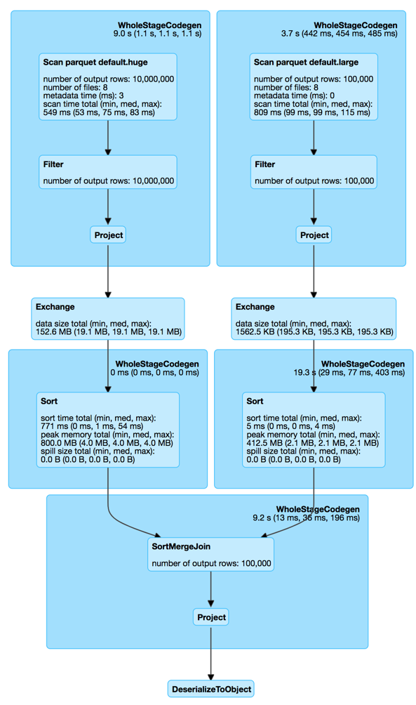
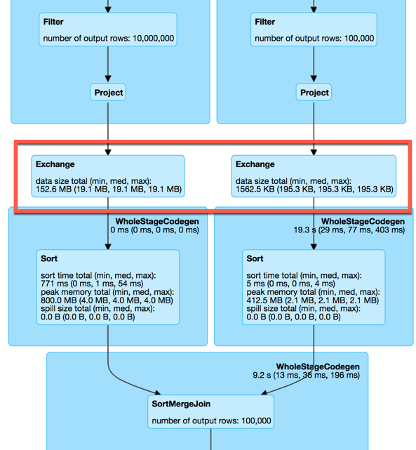
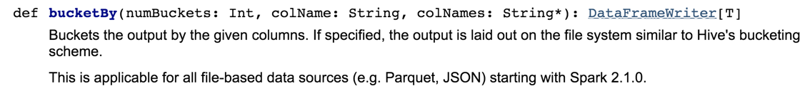
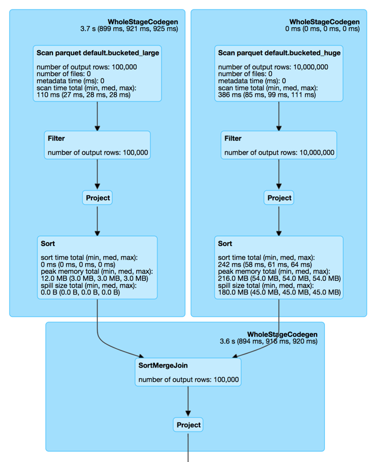
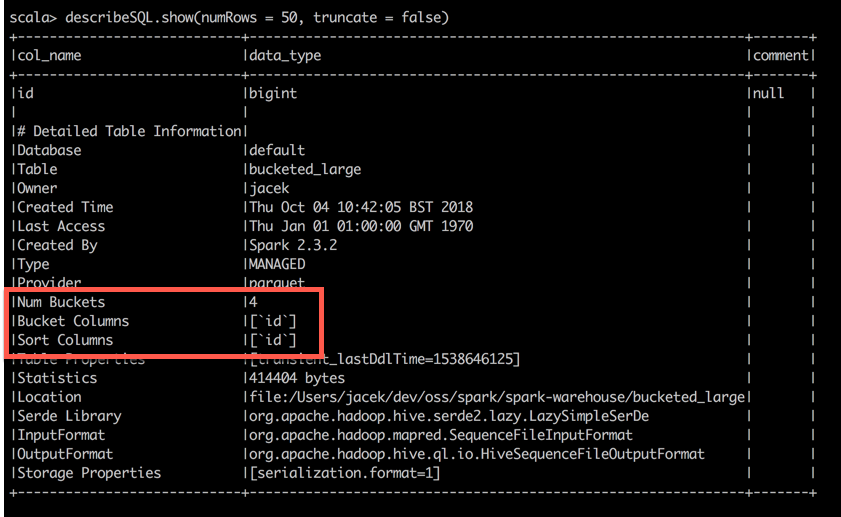

Bucketing in Spark SQL
Apache Spark 2.3.1 / Spark SQL
@jaceklaskowski / StackOverflow / GitHub
Books: Mastering Apache Spark / Mastering Spark SQL / Spark Structured Streaming
Agenda
Motivation
Sample tables
scala> spark.catalog.listTables.show
+-----+--------+-----------+---------+-----------+
| name|database|description|tableType|isTemporary|
+-----+--------+-----------+---------+-----------+
| huge| default| null| MANAGED| false|
|large| default| null| MANAGED| false|
+-----+--------+-----------+---------+-----------+
Join
spark.conf.set("spark.sql.autoBroadcastJoinThreshold", -1)
val huge = spark.table("huge")
val large = spark.table("large")
huge.join(large, "id").foreach(_ => ())
SortMergeJoin
SortMergeJoin with 2 Exchanges
Can we do better?
Can we avoid the exchanges?
Bucketing
- Optimization technique to bucketize tables
- Uses buckets and bucketing columns
- Specifies physical data placement ("partitioning")
- Pre-shuffle tables for future joins
- The more joins the bigger performance gains
Bucketing Configuration
- Bucketing is enabled by default
- spark.sql.sources.bucketing.enabled configuration property
scala> println(spark.version)
2.3.2
scala> println(spark.sessionState.conf.bucketingEnabled)
true
Bucketing and Data Sources
- Bucketing used for all file-based data sources
- Use DataFrameWrite.saveAsTable for Spark tables
- DataFrameWriter.bucketBy to define the number of buckets and the bucketing columns
- Use Hive-specific tools for Hive tables
- Use SparkSession.table to load bucketed tables

DataFrameWriter.bucketBy Example
// Creating bucketed tables
import org.apache.spark.sql.SaveMode
large.write
.bucketBy(4, "id") // <-- bucketing
.sortBy("id") // <-- optional sorting
.mode(SaveMode.Overwrite)
.saveAsTable("bucketed_large")
huge.write
.bucketBy(4, "id") // <-- bucketing
.sortBy("id") // <-- optional sorting
.mode(SaveMode.Overwrite)
.saveAsTable("bucketed_huge")
Join of Bucketed Tables
spark.conf.set("spark.sql.autoBroadcastJoinThreshold", -1)
val bucketed_large = spark.table("bucketed_large")
val bucketed_huge = spark.table("bucketed_huge")
bucketed_large.join(bucketed_huge, "id").foreach(_ => ())
SortMergeJoin with No Exchanges!
SortMergeJoins (Before and After)
|
|
|
DESCRIBE EXTENDED
- Use DESCRIBE EXTENDED SQL command to know whether a table is bucketed or not
val describeSQL = sql("DESCRIBE EXTENDED bucketed_large")
describeSQL.show(numRows = 50, truncate = false)
DESCRIBE EXTENDED
Summary
- Bucketing is an optimization technique for joins (of tables)
- Pre-shuffle tables for future joins
- Enabled by default
- spark.sql.sources.bucketing.enabled property
- Uses buckets and bucketing columns
- Number of buckets should be between 0 and 100000
- The number of partitions on both sides of a join has to be exactly the same
- Acceptable to use bucketing for one side of a join
Recap
Questions?
Read Mastering Spark SQL gitbook
Read Spark Structured Streaming gitbook
Follow @jaceklaskowski on twitter
Upvote my questions and answers on StackOverflow